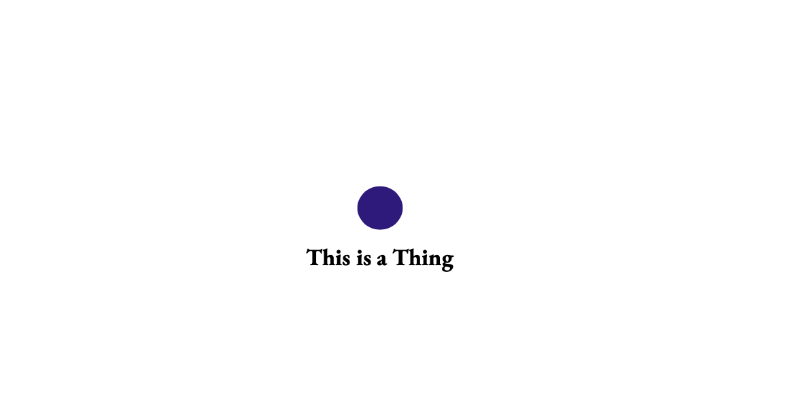
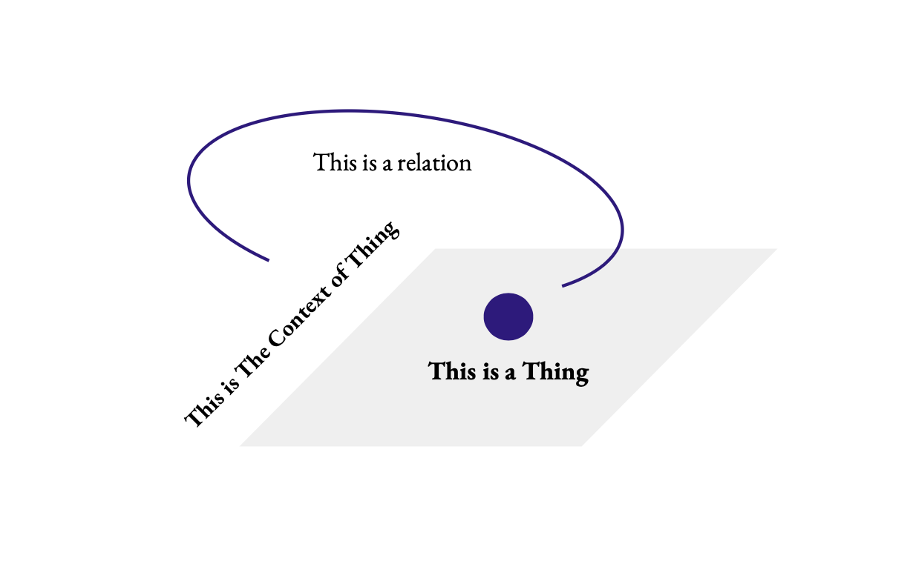
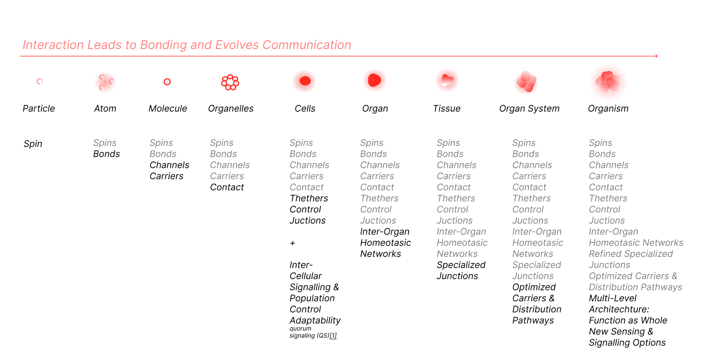

Evolving Agency
This is a brief account of a project which started back in 2020, which has been developed under some considerable scope modifications due to the board scope and a multi-conventional history which could not have been left unaddressed. The vast and complex philosophical takes, spanning cultures, accompanying the history of Humans and human thought. Confronted with Darwin’s agential materials non-biological agential systems, and synthetic agents. Additionally, the pressing necessity to model systems, driving the development of simulations for agents, from chemical to urban scenarios, now adjoint with policies and principal-agent regulations for trading and economics purposes. These are rather tangible in practice, and their quantitative and direct impact is configured by the quality of current interpretations of this term. It’s worth mentioning that we do not have a general expression for computing agency, neither one that abstracts agents from substrates, while keeping track of their relationships. Concerning approaches, Agent Based Models, (ABM) in which agents are defined within a substrate usually do not transfer into other spaces thus are confined to the model settings. Other approaches, such as System Based Models (SBM) also find significant challenges in generalising inter-agent outside configuration, or with different parameters. As if it wasn’t testing enough, agency sits at the intersection of some of the most profound questions one can ask about the universe, life, and ones place in it. Any practical approach must deal with, (or neglect) the tangents implicit in pursuit of general principles driving agency. The almost bottomless philosophical roots, match the far-reaching discussions about free will, causality, and consciousness, carrying applied echoes in everyday affairs, where agency seems to point to the capacity for action and influence without any information on its limitations or range. Is it limited to the living? Or could agency be something broader, a propensity, or property of systems that act and interact, amplifying motivation, regardless of the agent’s nature? Due to the known spatio-temporal dimensions of the orders in which things get organised, after exploring the challenges, the semantics and the polysemic nature of the term agency this project halted due to insufficient empirical adequacy and conceptual ground to support the principles sought in scope. However, a preliminary assessment of possible operable and verifiable hypothesis is laid. A risk surely. Accompanying it, some draft translations into a category-like approach as an attempt to identify agential breadcrumbs, and the bonding forces at play, in what is found certainly an overreaching exercise. It aimed to find the exact moment where agency sprouted. Is advanced that it failed, yet a possible contribution is in showing that when addressing agency as such, instead of a philosophical quest, there’s room for a technological interpretation of agency.
1 Introduction & Motivation
This is a brief account of a project which started back in 2020, which has been developed under some considerable scope modifications due to the board scope and a multi-conventional disciplinary history, which could not have been left unaddressed. The intricate, practical, and philosophical foundations span cultures, scopes, and are accompanied by the chronicles of a maturing human thought.
This investigation was motivated by four converging necessities:
- First, Darwin’s agential materials intertwining with the multi-scale competency architectures proposal, from where cellular, tissue, and organisms levels demonstrate degrees of problem-solving capabilities. These experimental results and the conceptual framework cementing the experimental design, poses a direct challenge to conventional explanations of biology where environmental and genetic factors must explain organismic behaviour (Levin 2019; Noble 2006). As such, measuring degrees of competency across scales becomes somewhat more tangible, even if by approximation, which seems of relevance if one aims relate adequately and at scale.
- Second, given the above, accommodating agency beyond the current exclusivity of human, and market-based contexts (Russell and Norvig 2020; Floridi et al. 2019) may have immediate reflection on how diverse systems are interfaced.
- Reframing agency as an ubiquitous phenomena, where agents of all kinds, have the capacity to act, affect, be affected, and produce effects on the environment, may contribute to advancements on complexity, chaos, and emergence theories.
- Lastly, the fourth, addressing “What is agency”, from a contemporary stance, means granting the broad range of agency definitions, the status of conceptual pointers, with diverse material instantiation affecting different kinds of entities within interlinked substrates. From a bottom-up perspective, these pointers appear to reference a shared reference, as “pointing to” a category or class of phenomena. While the computational and polysemic analysis tool developed in scope of this project does not appear of scientific significance, further improvements on its limitations (cleaner data set, or structurally coherent groups of sentences) could improve its results, and the viability of the methodology.
1.1 Background
1.1.1 Interactions and Relational Foundations
The quest to understand agency, starting from the capacities to act, influence, and interact within structured spaces, requests abstraction while preserving concrete relational links. The challenge echoes William James’s radical empiricism, which insisted that relations are as fundamental as the entities they connect (James 1912), and finds contemporary expression in Karen Barad’s agential realism, where “relata do not pre-exist relations; rather, relata-within-phenomena emerge through specific intra-actions” (Barad 2007, 139). The interactive nature of nature itself, contradicts any stance where agency is posed as a property of some isolated entity.
A sound counter-argument given the above, stems from the very same relational primacy, where then, at the microscale agency comparable to the process where gases which comprise particles undergo elastic collisions, conserving total kinetic energy, resulting in a macroscopic pressure, which is given statistically and not agentially. Sound as it may seem, this is exactly the problem one finds without a clear definition of agency, because this statistical effect points exactly to something larger than the individual trajectories of the particles in motion. The transition from individual particle behaviour to collective properties occurs through ensemble averaging, where Maxwell-Boltzmann distributions describe velocity probabilities in thermal equilibrium (Maxwell, “Illustrations of the Dynamical Theory of Gases,” 1860). When entertaining this counterfactual, it is also sound to say, that as no single particle carries pressure, the behaviour is of collective domain, happening via relational exchanges, where the capacity to act, of the acting, may not be reduced to properties of their own, but as distributed and allowed consequence. Thermodynamic approaches to modelling agents trace back to Lars Onsager’s reciprocal relations in irreversible thermodynamics, later developed by Ilya Prigogine into dissipate structure theory (Onsager, “Reciprocal Relations in Irreversible Processes,” 1931; Prigogine, From Being to Becoming, 1980). Contemporary applications include maximum entropy principle models of ecological communities (Harte, Maximum Entropy and Ecology, 2011) and thermodynamic modelling of neural networks where free energy minimization drives learning and adaptation (Friston, “The Free-Energy Principle: A Unified Brain Theory?,” 2010).
This traverse from collisions, thermodynamics and into computational models of agency, related to selection models in which agents are heat engines coupled to thermal baths and apply game-theoretic strategies (max-power vs. max-efficiency) (Babajanyan S. G. et al 2022). In those, competition for infinite (e.g., sunlight among plants) or finite (e.g., ATP pathways in cells) resources shape efficiencies and power, which evoke the prisoner’s dilemma, Stackelberg and Nash equilibria dynamics, and making heads or tails of “What is agency” is stifled by ambiguity.
The take away is that agency has an interactive and multi-scale nature, happens in the in between, both in configured relationships within structured environments, at scale-spaces transition, relating previous and subsequent levels of organisation.
1.1.2 Computational and Predictive Applications
Some multi-domain analogues attempts like the Five Domains Model in animal welfare extending agency to non-human actors, inferring subjective experiences via discrete states akin to ABM representations, thus broadening the concept of agency beyond whatever is meant by rational deliberation, however, maintaining the systems or the inclusion of a new variable is an effective hurdle. Scalability challenges arise from the inherent computational complexity of these approaches, with obvious example in the the NP-complete problem for any multi-agent coordination systems analogus to the Five Domains Model (Garey and Johnson, Computers and Intractability, 1979).
Of promise, but still in development are mathematical approaches that treat relations as structure, finding expression through differential geometry and topology. Modelling a connected space scoping all possible interactions (Spivak, Differential Geometry, 1979), from the above mentioned relations as structure idea, raction-diffusion systems are subject of reinterpretation. In RD systems, where spatial patterns of coupled processes show how local interactions produce global order through nonlinear dynamics (Murray, Mathematical Biology, 2002) where relating options are of type: cooperative, competitive, parasitic, mutualistic, and neutral. For each, distinct energy exchange patterns, and stability conditions (May, Stability and Complexity in Model Ecosystems, 1973), loop back to Levin’s work on cellular networks through which cognitive glue, allows for this coupling to process information, and where decision making is local, yet globally harmonious, without gene tampering((Michael Levin 2019); (Michael Levin 2021))
As such, agency as a shared reference “points at” relations that create energy currencies, where the capacity of processes to process varies, yet expresses under a single umbrella, forces, bonds, compositions, catalysis, scaling from molecular mechanisms to organisms and population behavior, all the mechanisms which currently the available models of agency (and agents) cannot integrate without extensive parametrization.
1.1.3 Agent Definition and Pathways of Action
Agents manifest as entities capable of affecting and being affected; producing effects while remaining susceptible to environmental influence. Following Henri Bergson’s insight that “to act is to take one’s place in the universal becoming” (Bergson, Matter and Memory, 1896/2004, 196), agents draw directed paths between antecedent and consequent states of events through configured spaces wherein both agent and environment are structured to enable mutual interaction and transformation.
Chemical agents demonstrate such pathways through catalytic processes where enzymes lower activation barriers, creating directed reaction pathways that would otherwise be thermodynamically unfavorable (Michaelis and Menten, “Die Kinetik der Invertinwirkung,” 1913). Intercellular protein transfer through membrane nanotubes illustrates biological pathway formation: immune cells establish tunneling connections that facilitate selective organelle exchange, then enabling distributed cellular computation beyond individual cell boundaries (Rustom et al., “Nanotubular Highways for Intercellular Organelle Transport,” 2004). Here, paths or pathways, find again expression in robotic agents compute path planning algorithms that navigate configuration spaces while avoiding obstacles (Latombe, Robot Motion Planning, 1991), or whatever goal one may have. Paths as processes does not represent a novel proposal, in fact, path-integrals relate tho stochastic processes in the same measure that these relate to brownian motion, ultimately rendered by some geometric interpretation, where change in space and time is computed in one direction, where then the sum of all parts, (spatio-temporal…) is the process of path-making. Paths as entities then echoes as Whitehead’s “actual entities” achieving definiteness through their relational “prehensions” given an environment, where whatever unfolds does so through a temporal becoming (Whitehead, Process and Reality, 1929, 23-24). Seeing agents as those who draw paths between before and after states has an obvious advantage, the mystery of “more than the sum of the parts” is resolvable by adding temporal parts to spatial ones, moreover, the process of summing up those parts, implies other temporal and spatial parts, namely of the medium where action happens and the targets (interacts) of said action. What remains of awe is that this orchestration is configured in such a manner that paths are possible everywhere.
1.1.4 Materials & Substrate
Material itself represents organized energy patterns, as demonstrated by Einstein’s mass-energy equivalence E=mc² and quantum field theory where particles arise as excitations in underlying fields (Einstein, “Does the Inertia of a Body Depend upon its Energy Content?,” 1905; Quantum Field Theory texts by Peskin and Schroeder, 1995). Metasurfaces and engineered media manipulate electromagnetic wave propagation through subwavelength structures, creating artificial materials with properties not found in nature (Yu and Capasso, “Flat Optics with Designer Metasurfaces,” 2014). These developments suggest that substrate properties themselves can be designed and modified, supporting substrate-independence principles. Substrate-independence theory, while not explicitly formalized as a unified framework, finds support across multiple domains. In biology, Dennis Noble’s systems biology demonstrates how cardiac rhythms arise through ion channel interactions that can be modeled independently of specific molecular implementations (Noble, The Music of Life, 2006). In computation, Turing completeness shows how any sufficiently complex computational system can simulate any other, regardless of physical substrate (Turing, “On Computable Numbers,” 1936). In physics, gauge theories reveal how fundamental forces manifest through symmetry principles that transcend particular field configurations (Yang and Mills, “Conservation of Isotopic Spin and Isotopic Gauge Invariance,” 1954). By seeing energy patterns as configurations of spaces and relations, remaining is the juxtaposition of a substate-dependancy and independancy, the first as manifestation through domain-specific configuration, and the lader, some kind of invariance connecting domains.
1.1.5 Animating substrate-multiplicity
It is said that agents must be “structurally coupled” with their environments through ongoing sensorimotor interaction (Varela et al., The Embodied Mind, 1991, 173). This autopoetic structural coupling, allows for self-making through continuous interaction and integrations of the feedback loops involved in homeostatic and autopoetic cycles. This does not contrast with the path-drawing proposal. Now, with TAME, the orders in which these cycles happen locally create a fabric of dynamic fixed points electrifying a grid like landscape which functions as substrate for higher-level ones, while simultaneously, forging a causal implication if none exists without it. In creating nested hierarchies motor proteins like kinesin that draw paths along microtubules (Vale and Milligan, “The Way Things Move: Looking Under the Hood of Molecular Motor Proteins,” 2000), quorum sensing (Miller and Bassler, “Quorum Sensing in Bacteria,” 2001) distributing local policies, one must ask if at their scale, the space between the paths is as wide as the one found in swarms, or apartment buildings. If emotional states are conveyed via predictive processing mechanisms that evaluate environmental changes and action outcomes, thus serving as motivational systems narrowing perceptual range towards a guided attention process (Bach 2009; Bach Dayan 2017), the internal paths towards external ones, the internalisation of external ones, and networks of any kind, requires discernibility of identities, meaning that the nodes of the network must be differentiable akin to “make a difference” (Latour, 2005), and the same conceptual principle is found in latent spaces, or better put, higher-dimensional vector spaces where geometric paths (or shapes! paths are spaces too) for example how some language models manipulate symbols from one substrate to another (Mikolov, 2013).
1.1.6 Causation and time
Questions of agency necessarily invoke causation and temporality, themes tracing back to pre-Socratic philosophy. Anaximander’s apeiron (boundless) represents the inexhaustible source from which all determinate beings arise and to which they return, prefiguring contemporary thermodynamic principles of energy conservation and transformation where the first law establishes energy’s invariance across transformations (Kirk et al., The Presocratic Philosophers, 1983, 117). His principle of cosmic justice; where “things pay penalty and retribution to each other for their injustice according to the assessment of time” (Anaximander DK 12 B1); anticipates modern understanding of irreversible processes and entropy increase described by the second law of thermodynamics.
Anaximenes’ concept of air (aer) as the fundamental substance that undergoes rarefaction and condensation to produce all natural phenomena parallels contemporary understanding of phase transitions and critical phenomena in statistical mechanics (Anaximenes DK 13 A5; Stanley, Introduction to Phase Transitions and Critical Phenomena, 1971). Heraclitean flux philosophy, emphasizing that “everything flows and nothing abides,” finds expression in modern physics where temporal becoming represents fundamental reality rather than mere appearance (Heraclitus DK 22 B30; Prigogine and Stengers, Order Out of Chaos, 1984). Aristotle’s efficient causation as “the primary source of change” (Physics 194b29-32) established conceptual frameworks continuing to inform debates about agential causation in complex systems (Aristotle, The Complete Works, 1984).
1.1.7 Senses and agency
The phenomenological tradition, where an analysis of temporal consciousness, internal time and circadian rhythms (Husserl, 1905/1991?) internal, compositional, or ar architecture that senses, then point to a scaffolding from where closure, coupling, and the path drawn to discernible but identic spaces blur the notion of withing the world and of the world. The conventional sense of agency found in psychiatry, and then again surprisingly in neuroscience, as a post-hoc rationalisation of unconscious processes (Libet, 1985; Wegner, The Illusion of Conscious Will, 2002?), conflict with the proposed range of path-drawing something has given its spatial and temporal parts, which as seen so far happen directed in space and time with a propensity of some nature towards increased connectivity and thus growth through form. Consciousness is at the present moment, as it is wise to tackle one big question at the time, yet sensing gives sensible bridge between agency and the means of without ingressing into these other debates. It is known that electromagnetic fields permeate space and carry information through wave propagation at light speed, enabling wireless communication and remote sensing (Maxwell, 1873). The electromagnetic spectrum spans from radio waves to gamma rays, with biological systems making used of portions of this spectrum for navigation, communication, and energy harvesting (Johnsen and Lohmann, “The Physics and Neurobiology of Magnetoreception,” 2005). This to say that currently it is widely accepted that trees, plants, and insects leverage from the em field to chose from the types of interactions available the optimal one, for example, nectar production in flowers is expensive, and while producing it has clear gains for reproduction not all insects are great pollinators. Flowers such as (fetch citation) chose the amount based in the hum produced but the visitor, and while this can be attributed to evolution alone, studies show that for human-made em perturbations immediate reaction obtained by both the pollinators and plants challenging the evolutionary driver theory. This on the fly adaptation towards preservation, questions the phenomenological experience as some prior underlying of agential mechanisms, given that a many scales, agents are naturally given information processing senses, through electromagnetic, chemical, and mechanical signaling systems, drawing those paths, with wider or narrower ranges for an effective purpose.
1.1.8 Energy and relationships
It is equally mesmerising that for every exchange energy is required. However, the exchange may not require (a lot) mass. Fusion leads to the formation of heavier elements from lighter ones, contributing to the abundance of elements in the universe. Yet one should note that fusion is in principle more expensive than fission, meaning that it takes more energy to start a fusion process compared to fission. Fusion involves combining light nuclei (like hydrogen isotopes) to form heavier nuclei, which requires overcoming significant electrostatic repulsion between positively charged nuclei. In contrast, fission involves splitting heavy nuclei (like uranium or plutonium) and typically releases energy more readily once initiated, as it exploits the binding energy of the nucleus (Verberck, 2016). Fusion reactions release significantly more energy per reaction compared to fission. For instance, the fusion of deuterium and tritium can release about 17.6 MeV of energy, while typical fission reactions release around 200 MeV. Fusion is the dominant process in stars, including our Sun, where hydrogen nuclei combine to form helium, releasing vast amounts of energy.
The energy released from fusion is significantly higher per reaction compared to fission, making it a more efficient process for energy production in stellar environments. Fusion leads to the formation of heavier elements from lighter ones, contributing to the abundance of elements in the universe. The fusion of hydrogen into helium and subsequently into heavier elements (up to iron!) is a fundamental process in stellar nucleosynthesis. This process not only generates energy but also creates the building blocks for planets and life, indicating a propensity for structure creation rather than destruction. In sum, could this be a propensity for efficiency of energy-production, such as in stars, or the creation of stable elements, and so forth?
If the previous statements are of empirical adequacy, then energy takes precedence over mass, and thus matter, at least ontologically speaking. The problem is that it is also said that matter is energy, but bounded. In QCD, gluons exhibit a propensity to stick, yet everything occurs in an (almost) massless space. Transitioning from QCD to QED necessitates a specific number of exchange paths for mass to become relevant. Is there a specific number of exchange paths to be computed to go from QED to the elements?
Quantum Chromodynamics (QCD) and Quantum Electrodynamics (QED) provides a foundational understanding of the energy-mass relationship in the universe, particularly as it pertains to nuclear processes such as fusion and fission. QCD describes the strong interactions that bind quarks and gluons within protons and neutrons, while QED governs the electromagnetic interactions that influence atomic structure and energy levels. Here, gluons, tend to stick, which in turn is said to make hadrons, The mass of these particles is influenced by the strong force, which is described by QCD. When transitioning to QED, the electromagnetic interactions become significant, particularly in how they affect the mass and stability of hadrons The path from finite to infinite volume, at least given hadronic obversables, From the invention of finite-volume technology to access physical observables by Martin Luscher over three decades ago to date, this field has grown in scope and complexity, enabling studies of scattering amplitudes and reaction rates, as well as spectroscopy of excited states of quantum chromodynamics (QCD) and resonances. Further, LQCD studies are augmented with the inclusion of quantum electrodynamics (QED), and subtleties related to the finite volume of systems in presence of QED have been understood and largely controlled. (2018, Z. Davoudi)
The Higgs mechanism is of relevance here as it concedes explanatory power to how particles acquire mass through their interactions with the Higgs field. The fucntionality of the ideas is that when particles interact with the Higgs field, they acquire mass, while on the other hand, those that do not interact remain massless.
Another The Higgs mechanism involves a process called spontaneous symmetry breaking. In the early universe, the Higgs field had a symmetric state with zero vacuum expectation value. As the universe cooled, the Higgs field settled into a non-zero value, breaking the symmetry and allowing particles to gain mass through their interactions with this field. For example, when an electron interacts with the Higgs field, it acquires mass proportional to the strength of its coupling to the field.
Here, a photon, already a significant constructed path from the interactions above, is unphased, meaning, unlike a gluon, will not care to stick to itself as much as it seems made to explore, alone. Here, a photon is the emblem of unconstrained propagation: as the gauge boson of an Abelian field, it does not self‑confine at tree level, so electromagnetic flux explores spacetime along null geodesics and mediates long‑range coupling without necessary formation of strings.
Operationally, neutrinos are the archetypal flux that transports information, energy, and conserved charges across otherwise disconnected regions, so in the language of coupling and paths is as if their long‑range, weakly interacting channel linked local nuclear processes to global preferred patterns. It is said that in the early universe, neutrino decoupling at \(T ≈ MeV\) imprints the radiation energy density, affecting the universe expansion rate, and then damps small‑scale matter power, thus the cosmic neutrino background as a long‑mean‑free‑path carrier of constraints that couple microphysics to structure formation.
A neutrino, is almost massless yet not entirely so. Flavor oscillations imply distinct mass eigenstates, and weak interactions give neutrinos enormous mean free paths. (be more detailed lady and add citations)
Stars write “fusion paths”, likely due to the high temperature and density supply at the Coulomb‑barrier activation energy, where fluxes of baryon number, photons, and neutrinos couple local nuclear events into a global power‑producing, structure‑forming engine. This engine that drives nucleosynthesis and builds the elemental alphabet for chemistry, seems efficient with a purpose, as the “path of maximal binding per constraint,” is consistent with thermodynamic means (second law) globally with configured local decreases via the open‑system created in the process. Could this be a reflection of an intrinsic goal towards growth?
Fusion not only generates energy but also facilitates the synthesis of elements necessary for the formation of stars, planets, and ultimately life. This propensity for structure creation over destruction, in informal terms, in observations that systems tend to evolve towards states of higher entropy and complexity (not providing a definition yet but i should) (Kuteev, 2020). The flux of nuclear reactions in stars forge progressively heavier nuclei, charting a path across the nuclear landscape that maximizes binding energy per nucleon up to iron, channelling the available gravitational and thermal energy into the synthesis of complex, stable elements. The branching points (e.g., triple-alpha, CNO cycles, s- and r-processes) resemble some kind of attractor for the nucleosynthetic flux, where pathways that stabilize stellar interiors also enable diversity. It seems then possible to place stars and cells connected by this preference, as the consequence for building and maintaining structure (stable nuclei and steady ATP supply). Again, it is not ground breaking neither shocking that stability is sought while mechanism fot newness seem to happens through context‑dependent branching, as in symmetry breaking directed by action. Here before and after states should the be homologous and homotopic coherent, moreover, the mechanism could be more general than once though, and of combinatorial properties at each scale
- Stellar path: maximise \(B->A\) subject to reaction network and environmental constraints, that follow fluxes that increase binding until the iron peak halts further exergonic fusion.
- Metabolic path: maximise ATP yield subject to redox and \(\Delta{p}\) constraints, following fluxes that convert \(\sum {\Delta G_{\text{redox}}}\) into \(\Delta{p}\) and thence into \(\mathrm{ATP}\) via ATP synthase.
In this context, fusion acting as a catalyst for growth and fission serving as a mechanism for energy release and recycling of matter. Moreover, coupling selects feasible trajectories so that many local steps produce a global preferred pattern in both starts and cells, from where an agency-energy grounded interpretation, where flux as an expression of “order through directed fluctuation” (Prigogine and Stengers, Order Out of Chaos, 1984, 177), could surely please Anaximenes doctrine of change, where change as an entity drawing paths; paths that amount to its growth and form, where differentiation and integration are possible, and thus an equivalence of the means to traverse and the traversed are then weaved into a single expression such as \(E=mc^2\).
1.1.9 The form of flux
1.1.9.1 High-level
Category theory offers a semantic formalism to tie parts and wholes with the processes that turn the former into the lader. (Mac Lane, Categories for the Working Mathematician, 1971; Awodey, Category Theory, 2010). Thus, of may design categories where substrates function as categorical spaces where objects represent states (parts and wholes) and morphisms represent mererological transformations. Then functors are maps between category spaces into coherent multi-step processes. Spaces here is used informally, just to build up for example a bilogist’s intuition in categorical terms. It is possible of course for a geometric interpretation of paths of transfomation as spaces. (see uv, and all the ct heroes) (Spivak, Category Theory for the Sciences, 2014).
 
One may advance a typology of energy exchanges which include: thermal energy transfer through conduction, convection, and radiation. Aditionally, chemical potential energy stored in molecular bonds, when released through reactions, and electrical energy flowing through charge gradients, or mechanical energy in organized motion, all qualify as a types of exchange, just wither at different scales, or at specific scale-spaces. For a quick example of asscociated interaction types, one may find that:
Strategic types
a) cooperative interactions where agents mutually benefit
b) competitive interactions where agents vie for limited resources
c) parasitic interactions where one agent benefits at another’s expense
d) mutual interactions where agents provide reciprocal services
e) and neutral interactions where agents neither help nor harm each other
(May, Stability and Complexity in Model Ecosystems, 1973).
Exchanges types
1. conduction
2. convection
3. radiation
4. storing
5. release
Could be conceptually paired as:
Strategic Exchanges (Strategy + Exchange types) 1. -> e): Neutral interactions: Conduction occurs without affecting the state of the materials involved, similar to neutral interactions where agents neither help nor harm each other. 2. -> a): Cooperative interactions: Convection can enhance the efficiency of energy transfer, akin to cooperative interactions where agents mutually benefit from shared resources. 3. -> b): Competitive interactions: Radiation can be seen as a competitive mechanism where entities vie for energy, similar to competitive interactions for limited resources. 4. -> d): Mutualistic interactions: The storing of energy can be likened to mutualistic interactions where both parties benefit from the energy stored, such as plants storing energy from sunlight. 5. -> c): Parasitic interactions: The release of energy, especially in chemical reactions, can be compared to parasitic interactions where one agent benefits at the expense of another.
Before any adventure through the differential energy potentials in question, one knows that these drive generally, some kind of directed transformations, in turn connecting biological metabolism, computation, and social exchange through shared energetic principles then akin to the observable irreversibility of processes from a fixed temporal orientation perspective (Prigogine, Introduction to Thermodynamics of Irreversible Processes, 1967).
The opportunity here is instead of thinking in term of categories one may think of these exchanges as somewhat homotopy coherence data. This data, belongs then to paths of transformation with topological properties which could look like flux fingerprints of scale-spaces.
For context, Homotopy coherence refers to the idea that structures in a topological space may be transformed into one another through continuous deformations. These transformatio however would maintain their essential properties. This is why if applied to different energy exchanges, these can be represented as paths in a topological space, where each path corresponds to a specific transformation or interaction. When posing agency as a capacity to act and draw paths between points in space, homotopy coherence offers a way to relate transformations of agents in different contexts, such as biological organisms or computational processes, with the purpose of viewing them as coherent paths, from a larger perspective, or within a larger framework. Aditionally, if taken further, and pose agency, transformation paths, and energy within a common setting, each energy transformation can be represented as a path in a scale-space, where the coherence of these paths reflects the shared energetic principles that govern the interactions between different entities.
Later, while this is a preliminary idea, the previously conceptually pairs in Strategic Exchanges could also grant a the modeller some implicit insights as they offer the possibility of a distinction withing the weaving of exchanges as each exchange is self-informing of the strategy associated.
1.1.9.2 Low-level view
1.1.9.2.1 Notation notes
- \(\mathcal{S}\): configuration space (substrate)
- \(Thing_{A}\): entity of type \(A\) with agency property
- \(p_{a}\): agency property as a dependent type \(p_{a}: Thing_{A}\to \mathrm{Type}\)
- \(\mathcal{P}\): agent–path (proof‑object) inhabiting a path type
- \(Hom_{\mathcal{C}}(x,y)\): type of morphisms/paths between states \(x\) and \(y\) in category \(\mathcal{C}\)
- \(\mathcal{E}: \mathcal{S}\to \mathbb{R}\): energy function on configurations
- \(\Delta\mathcal{E}(p) := \mathcal{E}(\mathrm{tgt}(p)) - \mathcal{E}(\mathrm{src}(p))\): energy change along path \(p\)
- \(Flux(Thing_{A}) := \sum\nolimits_{p:\,Thing_{A}^{core}\to Thing_{A}^{op}} [\,\Delta\mathcal{E}(p) > 0\,]\): type of energetically admissible paths (a \(\Sigma\)-type carrying the proof of amplification)
- \(\mathcal{E}_{total}(Thing_{A}) := \displaystyle \int_{t_{1}}^{t_{2}} \int_{\mathrm{path}(t)} \mathcal{E}(x,t)\,dx\,dt\): mereological energy sum over time and along the agent‑path
When posing agency as minimally as a capacity to act, it entails a latent possibility to draw a path from point \(x\) to point \(y\). If \(Thing_A\) has agency, under the premise that in this case, all \(Things_A\) have agency, then \(Thing A\) at point \(x\) and \(Thing A\) at point \(y\), are the same thing, just at different points in space, and in a given interval of time, such as \([t1, t2]\). Here, if \(Thing A\) has agency, and agency is the capacity to draw a path between points \(x,y\), and the path \(path: x → y\) is possible via the path connectedness configuration of the space \(S\), hosting \(Thing A\), and the the points \(x,y\).
If agency is a property \(p_a\) of \(Thing_A\), then \(∀ Thing_A\) there is a property \(p_a\) that moves \(Thing_A\) along a path \(path: x → y\) in the interval \([t1, t2]\), in such path-connected space \(S\). As such, \(Thing_A_x\) and \(Thing_A_y\), meaning at the extremities of the path-points of \(path: x → y\), are equivalent, even under the change in time and position.
Thus, a preliminary definition goes as follows: Definition : (Agent-path and agency).
Assume a context \(\Gamma\) with
\[ \Gamma \vdash Thing_{A} : \mathrm{TYPE} \qquad\text{and}\qquad \Gamma \vdash p_{a} : Thing_{A} \to \mathrm{Type}. \]
However, for \(Thing_A\) to be true, one must prove \(∃ Thing_A\) in the first place, constructively. Here things get interesting, as one may not merely be postulated \(Thing_A\) to exist, thus \(path: x → y\) becomes the proof object in the constructive sense, of \(∃ Thing_A\), and \(p_a\) of \(Thing_A\).
A path‑agent is a term
\[ \Gamma \vdash \mathcal{P} : \bigl(x^{core} \to_{Thing_{A}} y\bigr) \]
with
\[ \Gamma \vdash x^{core} : Thing_{A} \qquad\text{and}\qquad \Gamma \vdash y : Thing_{A}, \]
From this perspective agency becomes a demonstrable construction of \(Thing_A\), and \(p_a\) of \(Thing_A\) is a proof of persistence, given by type whose inhabitants are the actual constructions of \(Thing_A\). The property \(p_a\) becomes a dependent type that varies with the specific path capabilities of each constructed \(Thing_A\), which are then dependant of the configuration properties of the connected space \(S\).
Agent Definition via Path–Agents Definition 2.1 (Agent and Agency Property)
Let \[ \Gamma\vdash Thing_{A}:\mathrm{TYPE},\quad \Gamma\vdash p_{a}:\,Thing_{A}\to\mathrm{Type} \]
An inhabitant \[ Γ⊢P:(xcore→ThingAy)\Gamma\vdash \mathcal{P}:(x^{core}\to_{Thing_{A}}y)Γ⊢P:(xcore→ThingAy) \] is a path‐agent, where \[ Γ⊢xcore:ThingA,Γ⊢y:ThingA.\Gamma\vdash x^{core}:Thing_{A},\quad \Gamma\vdash y:Thing_{A}.Γ⊢xcore:ThingA,Γ⊢y:ThingA. \]
Lemma 2.2 (Reflexivity) From identity type in HoTT, \[ Γ⊢reflx:x≡x:IdThingA(x,x).\Gamma\vdash \mathrm{refl}_{x} : x \equiv x : Id_{Thing_{A}}(x,x).Γ⊢reflx:x≡x:IdThingA(x,x). \]
Where, informally, \(Thing_A^{core}\) stands for an initial state, and \(Thing_A^{op}\) the possible state withing all the space states. With the reflexive path-agent:
\[ \text{refl}_x : x^{\text{op}} \to_Thing_A \]
One could say that it establishes a somehwat minimal-agency definition as the means for path-traversing an angent-path has the capacity for. Relating space and time as relevant in context:
\[ (Thing_A_x \simeq Thing_A_y) \simeq (Thing_A_{t_1} = Thing_A_{t_2}) \]
Where the spatial transformation (moving from \(x\) to \(y\)) corresponds to temporal persistence of \(Thing_A\) (across time interval \([t_1, t_2]\)).
Thus the relation of agency with a angent-path (path-structure), is one of the mode of traversing the path, whence, becoming. If \(Hom_C\) is the path-space form \(Thing_A_x -> Thing_A_y\), and \(p_a(Thing_A)\) takes \(Thing_A\) givent it’s capacity to, from state \(Thing_A_x -> Thing_A_y\), then:
\[ Hom_C(Thing_A_x,Thing_A_y) : Type \]
\[ Hom_C ≃ p_a(Thing_A) ≃ path: (Thing_A_x -> Thing_A_y) \]
In HoTT, flux-fingerprints mentioned yearlier as a hypothesis, become higher-dimensional path structures, where:
Thing_A_x: Thing_A^core
Thing_A_y: Thing_A^core -> Thing_A^op\[ Flux(Thing_A) ≃ Hom_C \]
due to:
\[ \frac{Γ ⊢ Thing_A : \text{TYPE} \quad Γ ⊢ x^c : Thing_A^{core}}{Γ ⊢ \text{refl}_x : x^{op} →_Thing_A x} \]
as this reflexivity creates a path from \(Thing_A\) to itself, in another instance of space and time, behaving like the standard identity morphism while using invertible terms from \(Thing_A^{core}\) as the foundation, given by
(rodin 2024, eq 33)
Γ ⊢ A : TYPE
Γ, x^c : Thing_A^core ⊢ Θ(x^c) : TYPE
Γ, x^c : Thing_A^core, y : Thing_A, t : x^op →_Thing_A y, θ : Θ(x^c) ⊢ C(t,θ) : TYPE
Γ, x^c : Thing_A^core, θ : Θ(x^c) ⊢ f(x) : C(refl_x, θ)
──────────────────────────────────────────────────────────────────
Γ, x^c : Thing_A^core, y : Thing_A, t : x^op →_Thing_A y, θ : Θ(x^c) ⊢ J^R_t(f,t,θ) : C(t,θ)As for agency as a proof-object and persistence allowance of an agent, in this case a path:
Γ ⊢ p : x^op →_Thing_A y Γ ⊢ agency_p : Hom_C(Thing_A_x, Thing_A_y)
───────────────────────────────────────────────────────────────────────
Γ ⊢ persist(p, agency_p) : Thing_A_{t_1} = Thing_A_{t_2}Interestingly, in this context, agency points to a meta-linguistic phenomena that constructs the identity of things, while remaining “invisible”. Conceptually agency as a proof existence is interesting, yet for the purpose of quantifying degrees of agency is too abstract. Yet, given the ontological precedence seen above \(mass -> energy\), as a hypothesis that energy precedes mass and that energy exchanges happen favouring fusion on average, the preference of a space is analogous to a configured constrained of the space where fusion happens forwards in time requiring more energy than fission, but the mereological sum of the temporal and spatial parts of \(Thing_A_x and Thing_A_y\) should in principle yield an energy exchange where conservation happened towards an increasing change of amplification.
What would happen if the above is equated in measurable energy differentials?
Let \(\mathcal{E}: S \to \mathbb{R}\) be an energy function over configuration space. Then:
\[ Flux(Thing_A) \simeq \Sigma(p: Thing_A^{core} \to Thing_A^{op}). [\Delta\mathcal{E}(p) > 0] \]
where \(\Delta\mathcal{E}(p) = \mathcal{E}(tgt(p)) - \mathcal{E}(src(p))\) represents the energy amplification along the path. The persistence rule becomes energy-constrained:
Energy‐Constrained Persistence Definition 3.1 (Flux and Persistence) Let \[ ΔE(p)>0\Delta\mathcal{E}(p)>0ΔE(p)>0 \] be a predicate in context Γ.
Define
\[ Flux(ThingA) = ∑p: ThingAcore→ThingAop[ΔE(p)>0].Flux(Thing_{A}) \;=\;\sum_{p:\,Thing_{A}^{core}\to Thing_{A}^{op}}[\Delta\mathcal{E}(p)>0]. \] \[ Flux(ThingA)=p:ThingAcore→ThingAop∑[ΔE(p)>0]. \] The persistence constructor \[ Γ⊢p:xop→ThingAy,Γ⊢ΔE(p)>0Γ⊢persist(p): IdThingA(x,y)\frac {% \Gamma\vdash p:x^{op}\to_{Thing_{A}}y,\quad \Gamma\vdash \Delta\mathcal{E}(p)>0 } {\Gamma\vdash \mathsf{persist}(p):\,Id_{Thing_{A}}(x,y)}Γ⊢persist(p):IdThingA(x,y)Γ⊢p:xop→ThingAy,Γ⊢ΔE(p)>0 \] requires strictly positive energy amplification.
A proposal surges as a mereological sum of temporal and spatial parts could then be expressed in terms of energy: \[ \mathcal{E}_{total}(Thing_A) = \int_{t_1}^{t_2} \int_{\text{path}(t)} \mathcal{E}(x,t) \, dx \, dt \]
with the constraint that:
\[ {E}_{total}(Thing_A_{t_2})\geq\mathcal{E}_{total}(Thing_A_{t_1}) \]
here, the instance of energy amplification of the agent-path competency agrees with conservation, and yields towards a sense of agency, as a transient phenomena.
1.2 Toward first principles
Many have wandered in the very same arguments laid out so far. The driving change, the cause of adaptability, and the invisible direction of action with or without recognised volition, have been developed as the foundations of physics, where one can interpret as substrate-specific implementations of one phenomena. Yet what exactly is meant by this? We’ve seen that traversing a path is not the same as the path, and that in this context, a path is drawn by an agents capacity for action, in this context agency. The path an agent can draw is the space between two spatio-temporal points, which once drawn, represent the agents trajectory in bceoming. We set as well that the capacity for is not an implication of such, meaning that without agency, an agent wont traverse the path. Thus, first we equated agency as a property of an agent. With this formulation, agency became the proof-object of the the agents identity and the carrier of an agent along the path of becoming itself. The path-agent depends on the configuration of the space, and the inhabitants of the proof-object are then the space, the agent, and it’s property agency. Agency then puts in effect the agent’s capacity for action and in a natural scenario this action performed in a substrate, may of may not affect the substrate, yet this possibility must be equated in context.
1.2.1 Agency requires energy
A system interacting with another without any transfer of energy is generally considered impossible. Interactions between systems, or things, typically imply some form of energy exchange, whether it is kinetic, potential, thermal, or another form of energy. Directly addressing the ubiqutous appearence of agency identified in the background section (number to be inserted), all manifestations of agency require energy exchange to transition from potential to actual states.
Towards the first principle of angency, the postulate that agency is the realisability of a function, held by a contruction, and through it, the following:
\[ f:Potential⟶Actual \]
must then be driven by energy exchange.
In classical mechanics, heat transfer, quantum field interactions, and all thermodynamic processes, energy exchange is the sine qua non of change. Consequently, any instance of agency requires energy exchange to move from potential to actualisation states.
This seems empirically adequate, as generaly, any structural coupling via thermodynamic gradients, wherein agents and environments become entwined through energy differentials, drives the current continum of presents from “before” and “after” states:
\(f:Before⟶After\)
From this hypothesis there are a few options to explore. 1. The first is to test if agents follow the same energetic principles when path-agent constructions are caled. By this is implied molecular, organismics, and organisationals, scales.
An agent’s action is a relation in space–time, drawing a path that transforms state Before \(B\) into After \(A\). Formally, agents instantiate transformations, such that:
\[ f:B⟶A \]
Instead of having a non-reversible process, one could mimic thhe fusion and fission modalities, and associate a cost to transport, such that for all funtions \(f\) necessarily true that these can be executed, thus this execution is a property of \(f\), as in \(∀f□P(f)\). Conversely, there exists an function \(f\) such that the direction in which this will be executed \(∀f□P(f)\), as in which sense \(f:A->B\) or \(f:B->A\), expressed as \(Q(f)\), is a choice implicit \(f\), thus \(Q(f)\) as a property, is embedded in P(f), where then \(∃x♢Q(x)\) implies a possible biforcation of \(f\), as total reversal of of a system state is usually not-possible, but a new instance of a state given by \(f\), as reversed execution, would yield renewal and not a deletion. As in this context, without energy exchange, a capacity for action remains latent, or static, whereas with it there’s an instant state of amplification expressed as \(\Delta\mathcal{E}(p) = \mathcal{E}(P_A(p_a)) - \mathcal{E}(P_B(p_a))\) where \(P\) in both instances \(P_A\) and \(P_B\) are the material efficacy, through which agency manifests as what executes \(f:A->B\), in this case,
\[ Flux(Thing_A) \simeq \Sigma(p: Thing_A^{core} \to Thing_A^{op}). [\Delta\mathcal{E}(p) > 0] \]
could possibly allow for the cost of reversible whereas without it, as not in motion and without the capacity for such, only one modality of execution is available.
1.2.2 Nonzero Flux Is Necessary for Agency
A constructive claim derived from the above goes as follows:
For any path-agent 𝒫, in space \(\mathcal{S}\), which may undergo its configured execution such as \(\mathcal{Hom_C}\), given by a property \(\mathcal{p_a}\), of \(things\) of type \(Thing_A\),
\[ \Gamma \vdash ∀P: P_A(P) \qquad \Gamma \vdash P_A(P): x \to y \qquad \Gamma \vdash space: S \]
and given that:
\[ P_A(P): x \to y \simeq Hom_C \qquad \text{,} \qquad Hom_c:Thing_{A_x} \rightarrow Thing_{A_y} \qquad \text{and} \qquad (Thing_{A_x} \simeq Thing_{A_y}) \simeq (Thing_{A_{t_1}} = Thing_{A_{t_2}}) \]
\[ f:present⟶future \]
expresses,
\[ p_a(P):P_{t1}⟶P_{t2} \]
\[ Flux_{(P)} \simeq \Sigma p_a(P) \qquad , \text{where} \qquad [\Delta\mathcal{E}(p) > 0] \]
In the case that
\[Δℰ(𝒫)=0\]
\[ Flux_{(P)} \qquad \text{condition} \qquad [\Delta\mathcal{E}(p) > 0]\] is not met, $$
Nonzero flux is necessary for agency if \[ Flux(ThingA)=0Flux(Thing_{A})=0Flux(ThingA)=0 \] then no inhabitant of \[ pa(ThingA)p_{a}(Thing_{A})pa(ThingA) \] exists. Proof Sketch: Assume \(Γ⊢P:x→y\Gamma\vdash \mathcal{P}:x\to yΓ⊢P:x→y and Γ⊢pa(P)\Gamma\vdash p_{a}(\mathcal{P})Γ⊢pa(P)\) By definition, \(pa(P)p_{a}(\mathcal{P})pa(P) requires ΔE(P)>0\Delta\mathcal{E}(\mathcal{P})>0ΔE(P)>0\) If \[ Flux=0Flux=0Flux=0, then ΔE(p)≤0\Delta\mathcal{E}(p)\le0ΔE(p)≤0 \]
for all ppp, contradiction.
Define \[ Etotal(ThingA)=∫t1t2 ∫path(t)E(x,t) dx dt,\mathcal{E}_{total}(Thing_{A}) =\int_{t_{1}}^{t_{2}}\!\int_{\mathrm{path}(t)} \mathcal{E}(x,t)\,dx\,dt,Etotal(ThingA)=∫t1t2∫path(t)E(x,t)dxdt \] subject to \[ Etotal(t2) ≥ Etotal(t1),\mathcal{E}_{total}(t_{2})\;\ge\;\mathcal{E}_{total}(t_{1}),Etotal(t2)≥Etotal(t1), \]
ensuring energy consistency across temporal parts.
Proof. The persistence constructor requires three premises:
Γ ⊢ p : x^op →_Thing_A y,
Γ ⊢ agency_p : Hom_𝒞(Thing_A_x, Thing_A_y),
Γ ⊢ amplify_p : Δℰ(p) > 0.
If Δℰ(p)=0, no term amplify_p can be formed, so persist(p, agency_p) is ill-typed. Hence no identification ThingA_{t1}=ThingA_{t2} can be produced and the equivalence (Thing_A_x ≃ Thing_A_y) ≃ (Thing_A_{t1} = Thing_A_{t2}) fails to inhabit. Therefore, with zero flux, agency is inoperative: paths cannot be executed, and no temporal persistence witness exists. ∎
Operationally, this is exactly the identity–transport failure in the total space Σ(s:𝒮).E(s): without a witness of amplification, transport along p cannot be assembled, so there is no path-lift that realises sameness-through-becoming.
1.2.3 Sufficiency Through Directed Flux and Encoded Landscapes
Mere flux \(\mathbf J\neq0\) is necessary but not sufficient for purposeful agency. Directed flux requires:
- Gradient Sensitivity: \(\mathbf J\propto\nabla\mu\) so flux aligns with relevant potentials.
- Adaptive Coupling: \(L_{\alpha\beta}\) depends on state, enabling modulation of response.
- Encoded Information: The thermodynamic landscape itself encodes “sensing” of gradients.
Example: ATP Synthase
The proton‐motive gradient \[\Delta\mu_{H^+}\] sculpts a spatially varying free-energy landscape across three catalytic sites. A high \[\Delta\mu_{H^+}\] lowers one site’s energy and raises the next, producing discrete 120° rotor steps. When \[\Delta\mu_{H^+}=0\], the landscape flattens (\[\nabla\!\cdot\!\mathbf J^E=0\] ⇒ \[J_{H^+}=0\]), halting rotation. Onsager reciprocity (\[L_{ij}=L_{ji}\]) guarantees reversible operation under inverted gradients, demonstrating that gradient encoding suffices for coherent, purposive flux without additional external information.
This Lagrangian density represents the rate of irreversible work performed per unit volume. The total action over the agent’s spatial domain \(V\) and temporal duration \(\tau\) is: Nonzero agency corresponds to \(A > 0\), indicating that net work has been performed to effect the state transformation. The specific transformation \(f: B \to A\) is realized through the flux integral:
\[ \mathcal{L}_{\mathrm{ag}}(\mathbf{r}, t) = \mathbf{J}(\mathbf{r}, t) \cdot \nabla \mu(\mathbf{r}, t) \times I\left[\nabla \mu(\mathbf{r}, t)\right] \]
This shows that the agent’s capacity to perform the transformation depends on the kinetic coefficient \(L\) (throughput capacity), the potential difference \(\mu_A - \mu_B\) (driving force), the path coherence ensuring the flux integral is well-defined.
This sufficiency through directed flux, as nonzero, information-coupled path is both necessary and sufficient for agency, so that no irreversible state change occurs without flux (\(\mathbf{J} = 0 \Rightarrow\) no \(B \to A\) transition) and information coupling avoid consider “destructive” scenarios.
As such, energy exchange provides the necessary and sufficient conditions for all other agential phenomena: it enables structural coupling between agents and environments through thermodynamic gradients; it supports autopoietic generative capabilities; it creates the temporal directionality required for purposive action; it operates independently of specific material substrates while maintaining physical realizability; and it scales from molecular interactions to social collectives through shared energetic principles (Maturana and Varela, Autopoiesis and Cognition, 1980; Noble, The Music of Life, 2006; Levin, “Bioelectric Signaling,” 2021).
Agency manifests through paths that are relations in space–time, each requiring energy exchange to transform potential into action. An agent acts as the directed link between “before” and “after” states, realized physically by morphisms \[f\colon A\to B\] that lack inverses precisely because they transfer energy, entropy or free energy—formalized as
\[ \Delta S = S(B) - S(A)\neq0 \]
whenever \(f\) effects irreversible work. These directed, non-invertible transitions ground James’s “relations as fundamental” (James 1912) and Barad’s intra-actions that bring relata-within-phenomena into material being (Barad 2007, 139), by providing the energetic substrate through which every relational path becomes physically possible.
Across scales and substrates, agency unfolds as energy-rate density
\[
\Phi \;=\;\frac{1}{M}\,\sum_\alpha\int_V\mathbf J_\alpha\!\cdot\!\nabla\mu_\alpha\,dV
\]
that sums all local flux–force products arising from chemical, thermal, mechanical, electrical or informational gradients (Chaisson 2010; Chaisson 2011). Empirically \[\Phi\] scales as a universal power law
\[
\Phi\propto M^b
\]
with \(b\approx-1/4\) in metabolic and cognitive systems (West & Brown 2005), rising toward zero in highly integrated societies and machines (Chaisson 2011; Georgiev 2025). Renormalization-group theory explains how summing local interactions yields fixed-point scaling invariant under coarse-graining (Raju et al. 2019).
Adopting \(\Phi\) as the substrate-independent variable of agency we achieve:
- A true scalar sum of all local energy exchanges that quantifies the material throughput enabling action.
- A predictive law of agency’s scaling across organizational levels via \(\Phi(M)\).
- A capture of energy–organization patterns through a universal power law from cells to civilizations.
Thus, \(\Phi\) provides both first-principles grounding in energy conservation and irreversibility, and a practical metric for how agency intensifies and unfolds across complexity’s hierarchy.
1.2.4 Agents do work. Action will be there. (Differential Potential)
Energy exchange between systems is driven by an asymmetric potential between the differences of those systems. This asymmetry often refers to differences in energy states, temperature, concentration, or other properties that lead to a net flow of energy from one system to another until equilibrium is reached or a steady state is maintained.
Asymmetric potential differences drive these interactions through thermodynamic gradients, providing the directional causation essential for agency’s temporal dimension that connects pre-Socratic insights about cosmic justice and temporal becoming (Anaximander DK 12 B1; Heraclitus DK 22 B30) with contemporary understanding of irreversible processes and entropy production (Prigogine and Stengers, Order Out of Chaos, 1984, 177).
Becoming, as in materialising, designates a class of transformations in which an initially homogeneous or weakly structured substrate undergoes an instability, crosses a critical threshold, and settles into a new configuration that persists after the driving flux subsides.
This incommensurability between a pass-through exchange is analogous to an enzymatic substrate transition—binding—that imprints symmetry constraints, defect networks, or encoded connectivity serving as a template for future dynamics.
This symmetry-breaking principle is valid across domains. In organic synthesis, formation of asymmetric C–C bonds uses chiral catalysts to bias one transition state over its mirror image, locking in stereochemistry—just as a molecular “choice” parallels the Higgs field selecting one angle in the Mexican-hat potential. In mathematics, symmetry breaking selects one solution from many symmetry-equivalent ones, the system naturally descending into a lower-energy minimum under fluctuations.
Asymmetric potentials do more than drive flux; they anchor the “before” and “after” in irreversible time:
Gradient-Driven Irreversibility: \[\Delta\mu\neq0\] imposes \[\mathbf J\neq0\], which by the second law yields \[\Delta S>0\]. Each flux step establishes a temporal arrow, turning potential into actual and marking a one-way transition \[B\to A\].
Symmetry Breaking and Permanence: Once a symmetry is broken, whether a chiral center formed or a protein conformation chosen, the system cannot simply invert without expending energy and producing entropy. The asymmetric energy landscape thus encodes permanent memory of the transition, cementing the arrow of time.
Generalizing the definition of agent, as something that can interact with something other than itself, one that recognises non-biologic agents, such as states, biological ones such as organisms, collectives such as swarms, and individuals such as people. Henri Atlan’s pioneering work on biological complexity and information theory has profoundly influenced our understanding of scale, development, self-organization and thus agency. Atlan’s principle of “complexity from noise” (le principe de complexité par le bruit) posits that random perturbations or “noise” can facilitate self-organization in biological systems, rather than simply disrupting them. This principle aligns with our concept of Potential, where interactions and interfacing enable entities to evolve and adapt within their environments. Atlan’s challenge to the reductionist paradigm in molecular biology, emphasizing the importance of emergent properties and the role of information in facilitating meaning and interpretative dynamics, resonates with our framework’s approach.
Recent experimental evidence reveals fundamental asymmetries in thermal processes where heating occurs faster than cooling, challenging symmetric expectations and demonstrating how energy flow creates intrinsic temporal directionality (Chétrite et al., “Fast Heating and Slow Cooling,” 2020). These asymmetries extend to molecular systems where hydration free energy differences show nonlinear synergistic effects; replacing sequential CH₃ groups with NH₂ yields -10 kJ/mol then -65 kJ/mol energy changes, illustrating how molecular components create asymmetric energy landscapes that drive specific transformations (Freire et al., “Hydration Free Energies,” 2021).
Generalizing the definition of agent—to include non-biologic states, organisms, swarms, and individuals—aligns with Henri Atlan’s principle of “complexity from noise”: random perturbations facilitate self-organization in open systems rather than merely disrupting them. This elevates noise from mere disorder to the symmetry-breaking seed that structures agency. Noise does not contradict information; instead, it biases which information pathways become reinforced, creating the precise boundary conditions for potential gradients and templated transitions.
To integrate action with our energy‐exchange first principles, we begin by defining a generalized action functional that subsumes all local flux–force interactions into a single variational object. Let the Lagrangian density at each point in space–time be the power density (rate of energy exchange per volume)
\[
\mathcal{L}(\mathbf r,t)\;=\;\sum_\alpha \mathbf J_\alpha(\mathbf r,t)\!\cdot\!\nabla\mu_\alpha(\mathbf r,t)\,,
\]
where each channel \(\alpha\) (chemical, thermal, mechanical, electrical, informational) contributes additively. The total action over a time interval \([0,\tau]\) and volume \(V\) is then
\[
A \;=\;\int_{0}^{\tau}\!\!\int_{V}\!\mathcal{L}(\mathbf r,t)\,d^3r\,dt\;=\;\sum_\alpha\int_{0}^{\tau}\!\!\int_{V}\!\mathbf J_\alpha\!\cdot\!\nabla\mu_\alpha\,d^3r\,dt.
\]
This definition directly ties action to differential potential: each term \[\mathbf J_\alpha\!\cdot\!\nabla\mu_\alpha\] is exactly the scalar power driving irreversible transformations and entropy production \[\Delta S\neq0\].
From this first principle, that agency is sustained by nonzero action—we derive two substrate-independent scalar metrics:
Energy-Rate Density (Φ):
\[ \Phi \;=\;\frac{1}{M}\frac{dA}{dt} \;=\;\frac{1}{M}\sum_\alpha\int_{V}\!\mathbf J_\alpha\!\cdot\!\nabla\mu_\alpha\,d^3r, \]
which sums all local power densities per unit mass and obeys \(\Phi\propto M^b\), predicting organization levels via the power-law exponent \(b\).Average Action Efficiency (AAE):
\[ \mathrm{AAE}\;=\;\frac{N_{\rm events}}{A} \;=\;\frac{\sum_i1}{\sum_\alpha\int_0^\tau\!\!\int_V\mathbf J_\alpha\!\cdot\!\nabla\mu_\alpha\,d^3r\,dt}, \]
which quantifies how effectively systems convert free-energy gradients into realized action. Under the Stochastic-Dissipative Least Action Principle, self-organization drives AAE upward, reflecting an attractor in action-space.
In phase-space terms, \(A\) is the integral of the phase-space agency density \(\mathcal{L}\), and variations \(\delta A=0\) (or \[\delta A\] extremal) yield the most probable agential pathways the substrate-independent generalization of the principle of least action across physical, biological, and synthetic systems. Under the Stochastic-Dissipative Least Action Principle, self-organization increases AAE, reflecting an attractor in action-space where noise-driven symmetry breaking guides systems toward more efficient energy utilization patterns.
1.2.5 Agency is the substrate of Agents who destribute actions scaling local to global
Here we are going to talk about configuring spaces, fields, higher category theory, and metasurfaces. Biology & Chemistry offer some examples of agency across different levels of organization that are closely related with substrate. From the chemical agency of molecules forming bonds to the simple->complex decision-making capabilities of organisms exhibited in experimental work. Entering a knowledge era where empirical evidence and theoretical thesis are approximating each other, and biological systems demonstrating a spectrum of agential behaviors, compound with Darwin’s thesis of agential materials, challenging our preconceptions about the requirements for conscious intent in goal attainment behaviour. As seen in earlier principles,
1.2.6 It is configured by very simple rules, or allowed by said simple configuration.
Providing yet another perspective, computer science research by the development models of autonomous agents and studying emergent behaviors in complex systems, these fields offer insights into how agency might arise from simple rules and interactions. (Wolfram & Levin)
1.2.7 All definitions point to the same thing.
I wondered if it would be possible to, in this diversity meaning, to develop a well-delimited, all-encompassing concept that is neither reductive nor subject to meaning loss of agency, while having in sight a post-pluralist symbolic attribution perspective. Given the size of the corpus, through an experimental approach using computational tools to approach the semantic aspects of the terminology, by constructively assembling meaning by its scattered embeddings, and relationship vectors. The goal was to test for either a deeper insight in diversity which could aid filling a gap in the current literature, and initiate a series of possible methods, which may be applied to other polysemous terms. Moreover, testing this method for a constructive deduction of meaning, opens a post-disciplinary opportunity for inquiring overloaded terms, which I hope in turn inspire others to be creative towards the premise of sense-making given the current information state of affairs we live in, where reduction while quite appealing presents us the trade-off of mechanical forgetfulness through reduction. A convenient inconvenience that for the effects of full disclosure and integrity, I must reveal as a sub-motivation for this tangent. When reduction of meaning happens, is it a lapse, a reflection of necessity? If through noise blending should we concern ourselves with developing approaches to scan noise for value? How does this evaluate this cross-contextual and multi-source relationships of symbols, when computational semiotics may be disregarded by some computer scientists, and how to evolve beyond traditional token classification with LLM’s and use current technologies to serve our purpose in analysing polysemous terms? The experiment done was amusing but far from being formalised theoretically. While not leaning too much on its results, we still have more than ground to attempt a re-definition. Many before me have been scoping and defining agency, and perhaps you may find it strange that I would dare to think I have some notable contribution to make, or bring some newness to the topic. Perhaps you are right, there will be nothing notably new in this essay in terms of ideas, the approach however it’s somewhat unconventional. Regardles I strongly argue that *at the very bottom of all the 200+ definition analysed, when stripped down to their processes** energy exchange is implied and so is the already implementation of agency as a physical process.
1.2.8 Agency as a technology for causation. Agents as the efficient means to, and for causes.
Grappling with the forces that drive change, we venture onto these depths not by intellectual vanity but as a response to empirical discoveries across multiple inquiry domains, and by the necessity and usefulness of answering this question, which could make of senseless things into something else. This transition yields to what Alfred North Whitehead termed a philosophy of organism, where reality is constituted by processes “all the way down” rather than by static substances that happen to interact. Almost as if materialism could be challenged not by discourse alone but by logic. Instead of treating processes as modifications that happen to things, for a reason that is unknown to us, equating that things may be “transient patterns” which at scale produce a coherent effect, a stability, seems to be better aligned with evidence than the other way around. The very fact that we can bundle material together implies the necessity of a deeper explanation, if material, some of it agential, could not relate, would it be agential at all, or all material that relates is agential? In our increasingly interconnected world, the need for a general theory of agency has never been more pressing. As we navigate complex systems, from ecosystems to economies, from social networks to artificial intelligence, we find ourselves grappling with the fundamental question of understanding, predicting and distinguishing how entities interact, influence, and evolve within their substrates, making new substrates. Nested processes where faster dynamics enable slower dynamics while slower dynamics constrain faster dynamics. Protein turnover rates within regenerating planarian tissues are actively modulated by bioelectric fields that coordinate morphogenetic outcomes. Planarian regenerative capacity reflects evolutionary processes that have shaped developmental genetic networks over geological timescales, creating temporal nesting where each organizational level both constrains and enables other levels. The nesting is not hierarchical but recursive. Higher-scale patterns constrain lower-scale affects, while lower-scale affects enable higher-scale patterns. This recursive causation creates scalar coupling, where the coordination of affecting across scales through boundary-mediated interactions. The question of course is why?
1.2.9 Agency as a substrate (Or property of any substrate) non-discriminating between arrangement domain.
Biochemistry is rather rich of examples where agential behaviour, from the chemical gradient as agents when molecules bonds, to the simple and quite complex decision-making distributed capabilities of organisms exhibited in experimental work. Empirical evidence and theoretical frameworks are approximating each other, converging to an old idea, one pointing at materials, challenging preconceptions about the requirements for agential, intelligent, and conscious potentials. This co-constitution, agent-agency, things-other-things, substance-substrate, demonstrates that the universality has sufficient manifestations not to fall in exaggeration. It is not that everything “has” agency as a property, but that everything exists through patterns of affecting and being affected, pointing to a fundamental dynamic through which things relate, persist, transform and carry all of these as potential. In turn, a substrate, a thing, an idea, seem to be able to be more or less agentic, thus in question is how do we evaluate the conditions and spectrum of its manifestation to clearly draw its axioms? Moreover, we can additionally ask which constitutions and configurations of a systems allow for more or less agential potential. Lastly, as interactions can be seen as transformation maps, perhaps a higher order mathematical framework, one that keeps track of these transformations by reference of relation, that across scales is expressed coherently, this would be of great benefit.
1.2.10 Agential-Potential as substrate-dependant range of affectation agents have, given by their morphology, part whole relationships, and environment.
Morphology, the form, structure, or pattern of a thing, constrains and enables agency. A protein’s three-dimensional structure determines what it can bind to and what reactions it can catalyze. A cell’s membrane architecture determines what can enter and exit. An institution’s organizational structure determines how it can exercise power and influence. Morphology creates what we term agential potential: the space of possible affects a thing can have or receive. This potential includes both positive and negative capacities, the ability to enhance or diminish, to attract or repel, to facilitate or inhibit. Agential potential is not static but changes as morphology changes through interaction with the environment. The concept of agential potential parallels potential energy in physics but extends beyond mechanical systems to encompass all forms of affecting and being affected. Just as potential energy represents the capacity for change based on position or configuration, agential potential represents the capacity for relational change based on morphological configuration. We relate to energy transfers and trajectories, with action and potential in physics, but we halted our study because we were using things and objects instead of systems. As I dislike systems language in general, I required proper terms to explain or understand the ranks, nestedness and interconnection of said morphologies. How does anything come to be.
1.2.11 Agency as cognitive technology distribution system, carried by agents.
Mapping Atlan’s concepts, connected the idea of “Long Distance Communication in Development” and “Bioelectrical Networks” is seems intimately related with the nature of interactions that separate a self from an environment. Signalling, at diverse scales of biological organization, regardless of the ‘intentionality’ debate, suggests that a ‘privileged’ or unifying function relates orders of organization.  Since Shanon’s Information Theory shares some terms with Thermodynamics, but does not directly correlate to biological systems, I found it extremely interesting how Atlan explored extensively this liminal space between Biology, Physics and Computation through an Information Theory Lens. Moreover, Michael Levin seems to approach the same premise that configuration is self informing of the set of capabilities available in principle, a problem-solving system has given it’s problem space. He even adds this concept of Morphogenesis, where a body B contained in body A it’s both a part of A as the origin of A, from a bottom-up approach of this multi-level architecture. Are morphologies cogs in this distributive system?
In regards to competency expression, we may be still tied to the limitations our own competencies allow us to observe, however it also offers the possibility through this framing to develop new means to expand our competencies, the same way we’ve developed tools to see beyond the spectrum of visible light. In this context, the hypothesis of an interdisciplinary and meta-entity Turing test could assess intelligence through a lens that transcends anthropomorphic mimicry. Traditional Turing tests focus on linguistic deception: “Can a machine imitate human conversation?” Yet this approach, while historically pivotal, needs some adjustments to address a competency-based intelligence understanding. A meta-entity Turing test would instead evaluate how systems recognize and interact with intelligence across domains, and allow competency mapping of problem-solving in physical, transcriptional, or abstract spaces (e.g., optimizing metabolic pathways, or negotiating ethical dilemmas). When slime molds exhibit problem-solving competency through gradient navigation and resource optimization(Reid et al. 2012), and systems like [[AlphaFold demonstrate competency in protein-folding spaces(Jumper et al. 2024)previously considered exclusive to evolutionary processes challenging traditional notions of problem-solving and adaptability in temporal scales(Michael Levin and Martyniuk 2024), while the later have been said “aware but not conscious”(Wang 2023), where does the first one stand?
Proposed by Joscha Bach in his 2007 thesis “Principles of Synthetic Intelligence PSI: An Architecture of Motivated Cognition” building on Dietrich Dörner’s Psi theory, it offers a grounded approach towards the creation of affective technologies, while at the same time attempting to understand it. Touching on enactive theories of agency(De Jesus 2018), where intelligence, autonomy, behaviour, purpose, and teleology(Rosenblueth, Wiener, and Bigelow 1943), are not only implemented but effectively explained by mechanisms based on survival and reward processed adapting over time to serve the embodied, however constraining the same to adequate responses in novel and sudden uncertain environments, impliying that the eboddied must remain autonomous and aware to adapt more effectivly challenging the very same processes that are no longer serving theit purpose. When combining computational and biological views, a technological approach to mind everywhere, TAME (M. Levin 2021), gives us experimentally varied demonstration supply of how the embodied spectrum of Diverse Intelligences, manifest appropriately to their problem space. All of these challenge the embodied convention of a self, making the embodiment the navigating configuration for something else to survive. Exactly because when associated, embodied motivated cognition (Bach 2009), and the computational boundaries of a “self” (M. Levin 2019), support that while architectures may vary, the process and subject of relating, and where internal and external states interplay creating diminishing or augmented competency-state chains, agency and “intelligence seem intimately connected by the category of inputs, throughput, and outputs og agents, via interaction-based products of things and their environment.”
To simply support the above, bare in mind that the agency-intelligence bundle is not a conflation neither a categorical error. It is a pointer where it is undistinguishable at some scales to discern between intelligent behavior such as goal directness, and energy-based decisions, and the principle of least action, or just physics in general. Similarly, it is undistinguishable the mechanistic and explainable nature of precesses and their cogs.
1.3 Questions Answered
- Question 1: Agency, is it substrate dependent? No, Agency is the substrate.
- Question 2: Agents, what would allow for more or less agency? Agent configuration.
- Question 3: Is it a property or a configuration? Several, is a configuration set allowing for optimal agentic potential throughput.
- Question 4: If it manifests by interactions, can we quantify their exchanges? It seams reasonable, in principle, however, for now, we need to know its baseband.
- Question 5: Scale, is there a pattern on how it manifests within problem spaces? If energy exchange is a scale invariant pattern, scale dependant phenomena should yeild at a pattern per order of said interactions. he entire categorical structure with all functors and natural transformations.
1.4 Discussion
These challenges are compounded by the complexity tha nature of the term across different scales and systems. At each level, or at each domain, scale-variant system interactions, make up all the laws yet known to us. In physics, we grapple with the improbable and bizarre behaviour of quantum mechanics, which has it’s own implications, such as agency, in matters concerning causality. In biology, we are faced with novel interpretations upon the principles driving goal-directed behavior, from where living systems, and their parts seem simultaneously parts and wholes. From there, minds and the distribution of competency across a systems, yields at a new frontier where psychology and physiology and neuroscience blur in distinction, as cellular and multicellular agents are conditioned under the same pavlovian premisses to exert a desired outcome. Astonishingly, both top-down and bottom-up control mechanisms, regulatory networks and adaptive feedback-loops, point to a paradigm-shift where agential potential is at least seen at these two instances: singular and plural, and yet regardless of configuration, morphology and problem space, it is then at best defined by a gluing-process that starts not at the individual level but before. At the very central question why and how come that everything we observe has more or less availability to interact?
- An unpopular take on consciousness and intelligence is that those ideas, shall remain short on an explanation concerning the configuration of the ultimate substrate that allows for interactions in the first place. This not to say they shouldn’t be pursed, the contrary, as all evidence shall equally remain of essence, yet from a fundamental perspective, the mystery of why agency seems to closely related yet so easily attributed as a quality but elusive to quantify. Quantifying agency would allow for optimal conditioning, novel and engineered implementations of agent, as would finding a general approach to describe categories of interactions, making them more of less agential, and possibly a taxonomy of agential potentials across the observable world which ethics seems to require.
-
Jacob Lurie Higher Topos Theory (2009, PUP) — full draft on arXiv
-
Homotopy Type Theory: Univalent Foundations (2013) — free PDF
-
Tom Leinster Higher Operads, Higher Categories (2004) — CUP draft
-
Harvard PDF edition of Higher Topos Theory
-
Edelsbrunner & Harer “Persistent Homology — A Survey” (2008)
-
Edelsbrunner et al. “Persistent Homology” in Handbook of Discrete & Comp. Geometry (2017)
-
Achille Varzi “Basic Problems of Mereotopology” (1998)
-
Barry Smith “Mereotopology: A Theory of Parts & Boundaries” (1996)